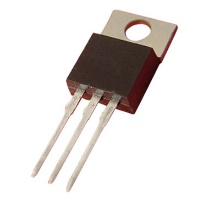

De transistor werd in 1948 uitgevonden door onderzoekers tewerkgesteld bij Bell Labs (nu AT&T).

Een transistor kan zelfstandig geen stroom of spanning opwekken maar hij kan deze wel regelen of versterken. Tussen de basis en de emitter van onze transistor bevindt zich een overgangslaag waarvan de doorlaatbaarheid kan variëren. Met andere woorden: een transistor kan werken als een elektronische schakelaar.
De transistor bracht een ware evolutie teweeg in de computerwereld en tegen het einde van de jaren vijftig waren de vacuümbuizen achterhaald. De komst van de transistor zorgde vooral voor meer energiezuinige apparaten, kleinere afmetingen en lagere prijzen.